Pertemuan 12#
Random Forest#
Tugas Laporan Analisis Data Menggunakan Decision Tree dan Random Forest di KNIME#
Random Forest#
Random Forest adalah algoritma klasifikasi yang terdiri dari banyak Decision Tree. Setiap tree akan menghasilkan prediksi, kemudian hasil akhirnya ditentukan berdasarkan suara terbanyak atau majority voting.
Rumus Prediksi Random Forest#
Untuk klasifikasi, hasil prediksi Random Forest dapat ditulis sebagai:
Keterangan Rumus#
\(\hat{y}\) = hasil prediksi akhir
\(h_i(x)\) = hasil prediksi dari Decision Tree ke-i
\(n\) = jumlah pohon dalam Random Forest
\(\text{mode}\) = kelas yang paling banyak muncul
Contoh Majority Voting#
Contohnya, jika ada 5 pohon dengan hasil prediksi:
Setosa, Setosa, Versicolor, Setosa, Virginica
Maka hasil akhirnya adalah:
Setosa
Karena kelas Setosa paling banyak dipilih oleh pohon-pohon dalam Random Forest.
Accuracy#
Accuracy digunakan untuk menghitung seberapa banyak prediksi yang benar dibandingkan seluruh data uji.
Pada hasil Random Forest:
Artinya, dari 45 data uji, terdapat 44 data yang berhasil diprediksi dengan benar.
Error Rate#
Error Rate digunakan untuk menghitung persentase kesalahan prediksi.
Pada hasil Random Forest:
Artinya, dari 45 data uji, terdapat 1 data yang salah diprediksi.
Precision#
Precision digunakan untuk mengukur ketepatan model ketika memprediksi suatu kelas.
Keterangan:
\(TP\) = True Positive, yaitu data positif yang diprediksi benar sebagai positif
\(FP\) = False Positive, yaitu data negatif yang salah diprediksi sebagai positif
Recall#
Recall digunakan untuk mengukur kemampuan model dalam menemukan data yang benar pada suatu kelas.
Keterangan:
\(TP\) = True Positive, yaitu data positif yang diprediksi benar sebagai positif
\(FN\) = False Negative, yaitu data positif yang salah diprediksi sebagai negatif
F-Measure#
F-Measure atau F1-Score adalah gabungan antara Precision dan Recall.
1. Judul#
Perbandingan Model Klasifikasi Decision Tree dan Random Forest Menggunakan Dataset Iris pada KNIME
2. Deskripsi Proyek#
Proyek ini bertujuan untuk melakukan analisis data klasifikasi menggunakan node-node yang tersedia di KNIME. Dataset yang digunakan adalah Iris dataset, yaitu dataset yang berisi data bunga iris berdasarkan beberapa atribut ukuran kelopak dan mahkota bunga.
Pada proyek ini dilakukan perbandingan dua algoritma klasifikasi, yaitu:
Decision Tree
Random Forest
Perbandingan dilakukan berdasarkan hasil evaluasi model menggunakan Scorer, terutama nilai accuracy, precision, recall, F-measure, dan confusion matrix.
3. Dataset yang Digunakan#
Dataset yang digunakan adalah IRIS.csv. Dataset ini memiliki beberapa atribut utama, yaitu:
Atribut |
Keterangan |
|---|---|
|
Panjang sepal bunga iris |
|
Lebar sepal bunga iris |
|
Panjang petal bunga iris |
|
Lebar petal bunga iris |
|
Kelas/jenis bunga iris |
Kolom species digunakan sebagai target column atau kelas yang akan diprediksi.
Kelas pada dataset Iris terdiri dari:
Iris-setosa
Iris-versicolor
Iris-virginica
4. Tujuan Analisis#
Tujuan dari analisis ini adalah:
Membuat model klasifikasi menggunakan Decision Tree.
Membuat model klasifikasi menggunakan Random Forest.
Membandingkan performa kedua model berdasarkan hasil evaluasi.
Mengetahui model mana yang menghasilkan performa lebih baik pada dataset Iris.
5. Workflow KNIME#
Workflow yang digunakan terdiri dari beberapa node utama:
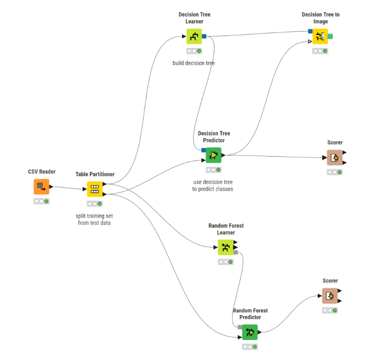
CSV Reader
→ Table Partitioner
├→ Decision Tree Learner → Decision Tree Predictor → Scorer
└→ Random Forest Learner → Random Forest Predictor → Scorer
Selain itu, digunakan juga node:
Decision Tree to Image
Node ini digunakan untuk menampilkan visualisasi struktur pohon dari model Decision Tree.
6. Penjelasan Node yang Digunakan#
6.1 CSV Reader#
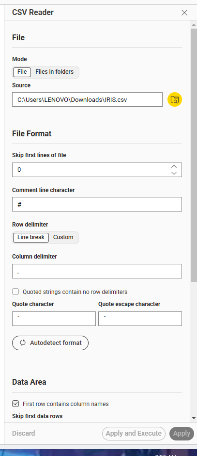
CSV Reader digunakan untuk membaca file dataset dalam format .csv.
Pada proyek ini, file yang digunakan adalah:
IRIS.csv
Pengaturan penting pada node ini:
Pengaturan |
Nilai |
|---|---|
File |
|
Column delimiter |
Koma |
First row contains column names |
Aktif |
Alasan digunakan:
Node ini digunakan karena dataset disimpan dalam bentuk CSV, sehingga KNIME perlu membaca data tersebut terlebih dahulu sebelum dilakukan proses analisis.
6.2 Table Partitioner#
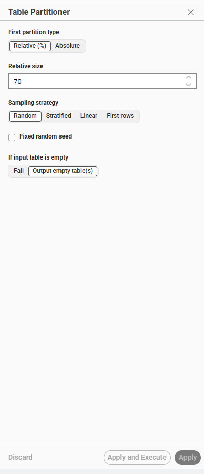
Table Partitioner digunakan untuk membagi dataset menjadi dua bagian, yaitu:
Training data
Testing data
Pada proyek ini digunakan pembagian data:
Bagian Data |
Persentase |
|---|---|
Training data |
70% |
Testing data |
30% |
Sampling strategy yang digunakan adalah Random.
Alasan digunakan:
Data training digunakan untuk melatih model, sedangkan data testing digunakan untuk menguji kemampuan model dalam memprediksi data baru. Pembagian 70% dan 30% umum digunakan karena memberikan jumlah data yang cukup untuk pelatihan dan tetap menyediakan data untuk pengujian.
6.3 Decision Tree Learner#
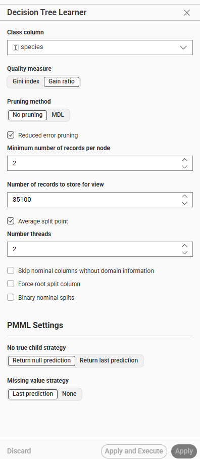
Decision Tree Learner digunakan untuk membangun model klasifikasi berbasis pohon keputusan.
Pengaturan penting pada node ini:
Pengaturan |
Nilai |
|---|---|
Class column |
|
Quality measure |
Gain Ratio |
Pruning method |
No pruning |
Reduced error pruning |
Aktif |
Minimum number of records per node |
2 |
Alasan digunakan:
Decision Tree digunakan karena algoritma ini mudah dipahami dan dapat divisualisasikan dalam bentuk pohon keputusan. Model ini bekerja dengan membagi data berdasarkan atribut yang paling baik untuk memisahkan kelas.
Pada dataset Iris, atribut seperti petal_length dan petal_width biasanya sangat berpengaruh dalam membedakan jenis bunga, sehingga Decision Tree cocok digunakan.
6.4 Decision Tree Predictor#
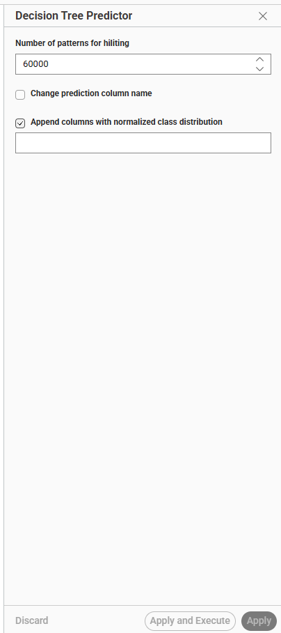
Decision Tree Predictor digunakan untuk melakukan prediksi terhadap data testing menggunakan model yang sudah dibuat oleh Decision Tree Learner.
Output dari node ini adalah tabel data testing yang sudah ditambahkan kolom hasil prediksi, yaitu:
Prediction (species)
Alasan digunakan:
Node ini diperlukan karena model yang sudah dilatih belum menghasilkan prediksi secara langsung. Oleh karena itu, data testing harus dimasukkan ke node predictor untuk mengetahui hasil klasifikasi dari model Decision Tree.
6.5 Decision Tree to Image#
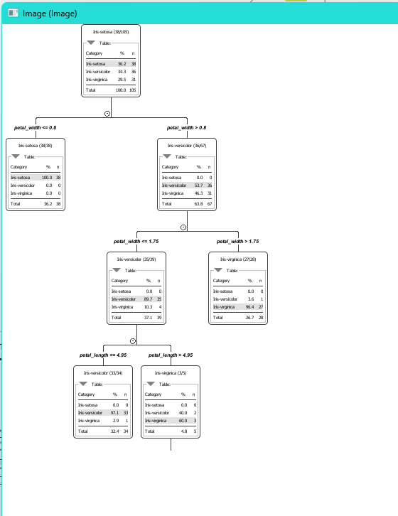
Decision Tree to Image digunakan untuk menampilkan struktur model Decision Tree dalam bentuk gambar.
Alasan digunakan:
Node ini digunakan agar model Decision Tree lebih mudah dipahami secara visual. Dengan visualisasi ini, dapat dilihat bagaimana model mengambil keputusan berdasarkan atribut-atribut pada dataset.
Namun, node ini hanya cocok untuk Decision Tree, bukan untuk keseluruhan Random Forest, karena Random Forest terdiri dari banyak pohon keputusan.
6.6 Random Forest Learner#
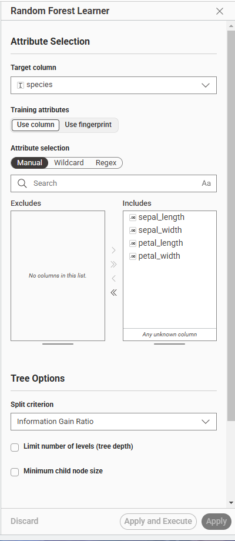
Random Forest Learner digunakan untuk membuat model klasifikasi Random Forest.
Pengaturan penting pada node ini:
Pengaturan |
Nilai |
|---|---|
Target column |
|
Training attributes |
|
Split criterion |
Information Gain Ratio |
Alasan digunakan:
Random Forest digunakan karena algoritma ini merupakan pengembangan dari Decision Tree. Random Forest membangun banyak pohon keputusan, lalu menggabungkan hasil prediksi dari pohon-pohon tersebut.
Dengan menggunakan banyak pohon, Random Forest biasanya lebih stabil dan dapat mengurangi risiko overfitting dibandingkan satu Decision Tree.
6.7 Random Forest Predictor#
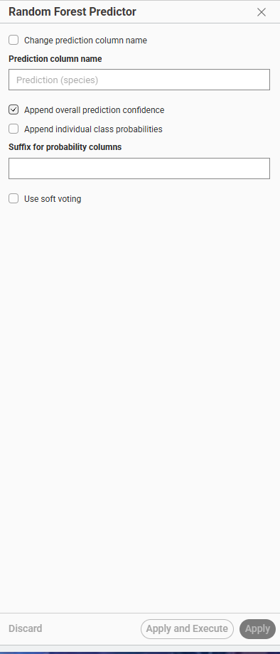
Random Forest Predictor digunakan untuk melakukan prediksi terhadap data testing menggunakan model Random Forest yang sudah dilatih.
Pengaturan yang digunakan:
Pengaturan |
Status |
|---|---|
Append overall prediction confidence |
Aktif |
Append individual class probabilities |
Tidak aktif |
Use soft voting |
Tidak aktif |
Alasan digunakan:
Node ini digunakan agar model Random Forest dapat menghasilkan prediksi kelas untuk data testing. Hasil prediksi kemudian dievaluasi menggunakan node Scorer.
Fitur overall prediction confidence digunakan untuk menampilkan tingkat keyakinan model terhadap hasil prediksi.
6.8 Scorer#
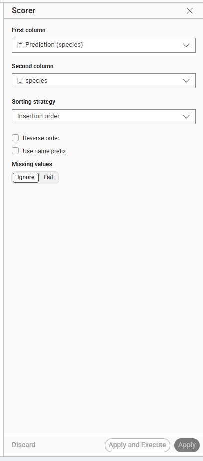
Scorer digunakan untuk mengevaluasi hasil prediksi model.
Pengaturan pada node Scorer:
Pengaturan |
Nilai |
|---|---|
First column |
|
Second column |
|
Alasan digunakan:
Scorer digunakan untuk membandingkan hasil prediksi model dengan data aktual. Dari node ini diperoleh nilai evaluasi seperti:
Accuracy
Precision
Recall
Sensitivity
Specificity
F-measure
Cohen’s kappa
Confusion matrix
Node ini penting karena digunakan untuk mengetahui seberapa baik model dalam melakukan klasifikasi.
7. Hasil Evaluasi Decision Tree#
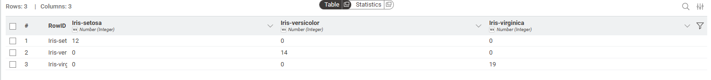
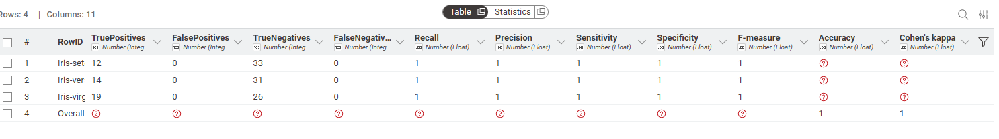
Berdasarkan hasil Scorer untuk model Decision Tree, diperoleh hasil sebagai berikut:
Kelas |
True Positive |
False Positive |
True Negative |
False Negative |
Recall |
Precision |
F-measure |
|---|---|---|---|---|---|---|---|
Iris-setosa |
12 |
0 |
33 |
0 |
1.000 |
1.000 |
1.000 |
Iris-versicolor |
14 |
0 |
31 |
0 |
1.000 |
1.000 |
1.000 |
Iris-virginica |
19 |
0 |
26 |
0 |
1.000 |
1.000 |
1.000 |
Overall |
- |
- |
- |
- |
- |
- |
- |
Nilai evaluasi utama:
Metrik |
Nilai |
|---|---|
Accuracy |
1.000 |
Cohen’s kappa |
1.000 |
Confusion matrix Decision Tree menunjukkan bahwa seluruh data testing berhasil diklasifikasikan dengan benar.
Jumlah prediksi benar:
12 + 14 + 19 = 45
Total data testing:
45
Maka accuracy Decision Tree adalah:
Accuracy = 45 / 45 = 1.000 = 100%
Kesimpulan sementara:
Model Decision Tree memperoleh akurasi sebesar 100% pada data testing.
8. Hasil Evaluasi Random Forest#
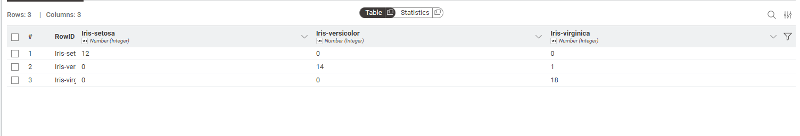
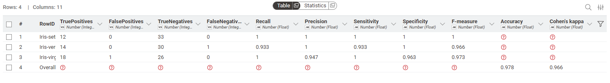
Berdasarkan hasil Scorer untuk model Random Forest, diperoleh hasil sebagai berikut:
Kelas |
True Positive |
False Positive |
True Negative |
False Negative |
Recall |
Precision |
F-measure |
|---|---|---|---|---|---|---|---|
Iris-setosa |
12 |
0 |
33 |
0 |
1.000 |
1.000 |
1.000 |
Iris-versicolor |
14 |
0 |
30 |
1 |
0.933 |
1.000 |
0.966 |
Iris-virginica |
18 |
1 |
26 |
0 |
1.000 |
0.947 |
0.973 |
Overall |
- |
- |
- |
- |
- |
- |
- |
Nilai evaluasi utama:
Metrik |
Nilai |
|---|---|
Accuracy |
0.978 |
Cohen’s kappa |
0.966 |
Confusion matrix Random Forest menunjukkan bahwa terdapat 1 data yang salah diklasifikasikan.
Jumlah prediksi benar:
12 + 14 + 18 = 44
Total data testing:
45
Maka accuracy Random Forest adalah:
Accuracy = 44 / 45 = 0.978 = 97.8%
Kesimpulan sementara:
Model Random Forest memperoleh akurasi sebesar 97.8% pada data testing.
9. Perbandingan Decision Tree dan Random Forest#
Model |
Accuracy |
Cohen’s Kappa |
Jumlah Data Benar |
Jumlah Data Salah |
|---|---|---|---|---|
Decision Tree |
1.000 / 100% |
1.000 |
45 |
0 |
Random Forest |
0.978 / 97.8% |
0.966 |
44 |
1 |
Berdasarkan hasil tersebut, model Decision Tree memiliki hasil yang lebih tinggi dibandingkan Random Forest pada pengujian ini.
Decision Tree berhasil mengklasifikasikan seluruh data testing dengan benar, sedangkan Random Forest melakukan satu kesalahan klasifikasi.
10. Analisis Hasil#
Pada umumnya, Random Forest sering memberikan performa lebih baik dibandingkan Decision Tree karena Random Forest menggunakan banyak pohon keputusan. Akan tetapi, pada pengujian ini Decision Tree menghasilkan akurasi yang lebih tinggi.
Hal ini dapat terjadi karena beberapa alasan:
Dataset Iris relatif kecil dan sederhana
Dataset Iris memiliki pola data yang cukup jelas, terutama pada atributpetal_lengthdanpetal_width, sehingga satu Decision Tree sudah mampu memisahkan kelas dengan sangat baik.Pembagian data dilakukan secara random
Karena data dibagi menggunakan metode random, hasil model dapat berubah jika pembagian data berbeda.Random Forest memiliki unsur randomness
Random Forest membangun banyak pohon dengan proses acak. Pada dataset kecil, hasil Random Forest bisa sedikit berbeda dan tidak selalu lebih tinggi dari Decision Tree.Parameter model belum dioptimalkan
Random Forest dapat ditingkatkan performanya dengan mengatur jumlah pohon, kedalaman pohon, random seed, atau parameter lainnya.
11. Mengapa Workflow Dibuat Seperti Ini?#
Workflow dibuat dengan dua jalur model agar kedua algoritma mendapatkan data training dan testing yang sama. Dengan cara ini, perbandingan menjadi lebih adil.
Struktur workflow:
Table Partitioner
├→ Decision Tree
└→ Random Forest
Alasannya adalah:
Kedua model dilatih menggunakan data training yang sama.
Kedua model diuji menggunakan data testing yang sama.
Hasil evaluasi dari Scorer dapat dibandingkan secara langsung.
Perbedaan hasil berasal dari algoritma model, bukan dari perbedaan data.
12. Kesimpulan#
Berdasarkan hasil analisis menggunakan KNIME pada dataset Iris, diperoleh hasil bahwa:
Model Decision Tree memperoleh accuracy sebesar 100%.
Model Random Forest memperoleh accuracy sebesar 97.8%.
Pada pengujian ini, Decision Tree memberikan hasil yang lebih baik dibandingkan Random Forest.
Random Forest tetap merupakan algoritma yang baik, tetapi pada dataset kecil dan sederhana seperti Iris, Decision Tree sudah cukup mampu menghasilkan klasifikasi yang sangat baik.
Dengan demikian, untuk dataset Iris pada pembagian data 70% training dan 30% testing, model Decision Tree memiliki performa terbaik berdasarkan nilai accuracy.
13. Ringkasan Akhir#
Komponen |
Keterangan |
|---|---|
Tools |
KNIME |
Dataset |
Iris |
Target |
|
Model 1 |
Decision Tree |
Model 2 |
Random Forest |
Evaluasi |
Scorer |
Hasil terbaik |
Decision Tree |
Accuracy terbaik |
100% |